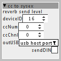

current working prototype of SysEx sending object: 2020-03-11.
sends Roland-style SysEx (with checksum). moar details inside in K-rate code comments.
sending non-Roland style SysEx is even simpler – no checksum.
cc to sysex.axo (2.6 KB)

since sending SysEX to DIN and USB requires different code, the choice of destination port is unconventionally controlled by sendDIN switch – when it's active, SysEx messages are sent to DIN, otherwise to USB.
also, deviceID is made as attribute, because it can be set different.
original post from october 2018:
so, after searching this forum about SysEx, i'm totally lost 
1st question: are SysEx messages supported somehow in current stable branch (1.0.12)?
in particular, can i generate and send them?
if the answer is yes, the second question is: how can i generate SysEx messages containing variable byte(s)? my target devices are Yamaha XG.
 )
)